Changing the order of which bootable medium is chosen first to boot an operating system from is usually a necessary step when installing or reinstalling operating systems. The slideshow below will demonstrate how to do this using the BIOS.
Find out which key to press to enter the BIOS. Common keys to enter it include F2, F10, F12, Delete and Escape. If none of those work, try the rest of the F keys. Afterwards, switch off the computer.
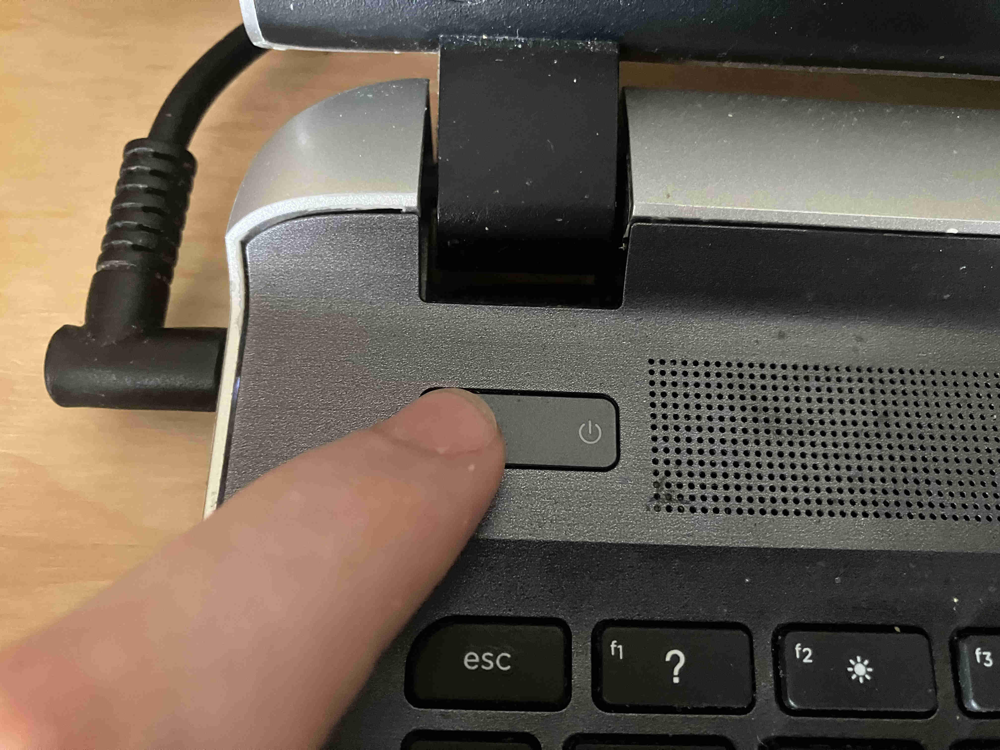
Switch the computer on.
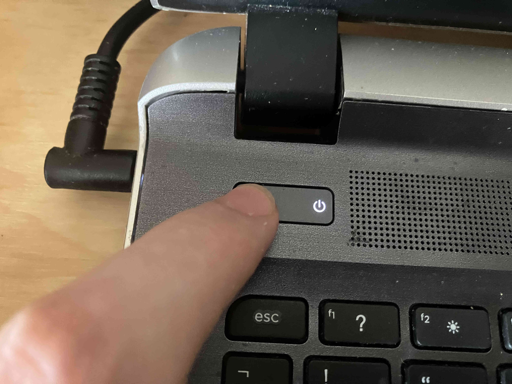
Repeatedly press the key to open the BIOS until it opens.
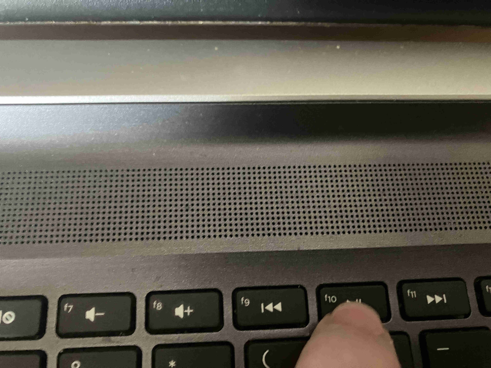
The BIOS should now be entered and you may see an exit BIOS message. If the operating system has started loading, then the wrong key was pressed or the key was not pressed constantly or fast enough. If this happens, wait for the operating system to load then choose Shutdown then go back to step 1.
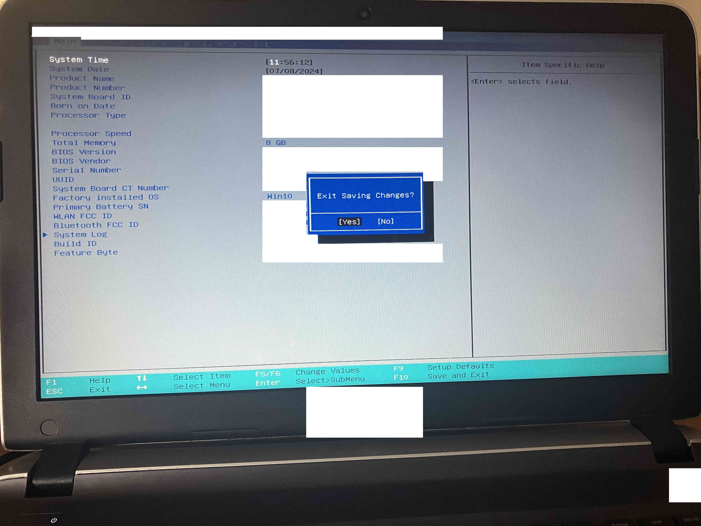
Dismiss the exit BIOS message.
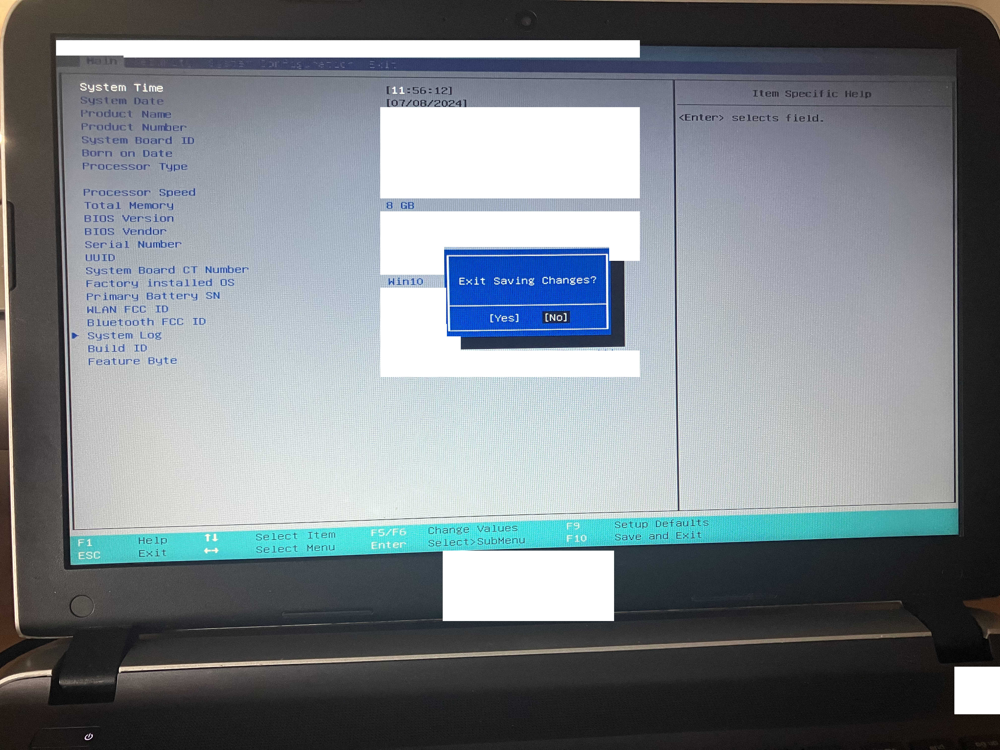
The screen should now look similar to this.
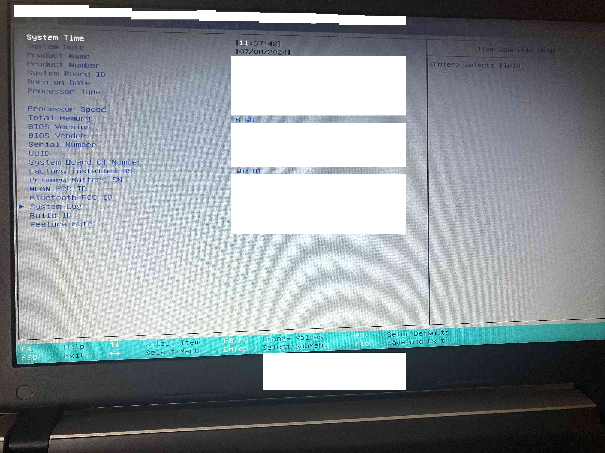
Navigate to the appropriate menu for changing boot order. On this device, it is under System Configuration.
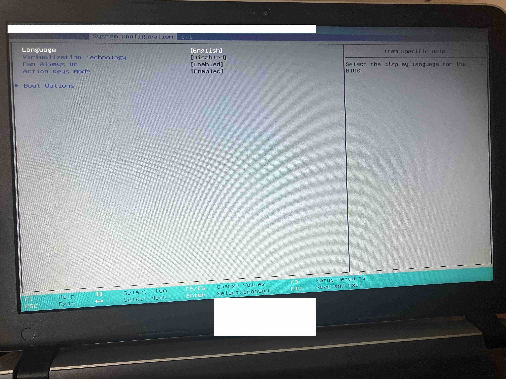
Move down to Boot Options
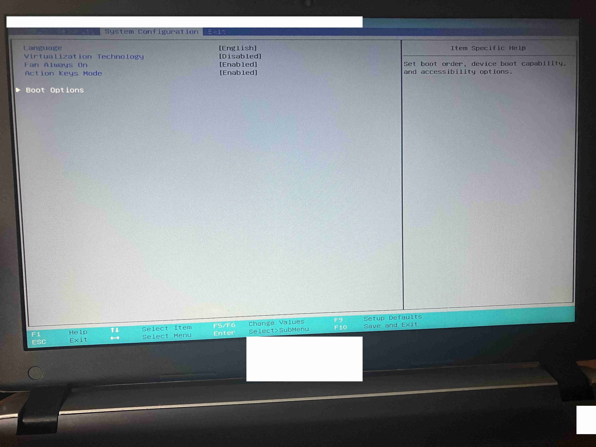
Enter the Boot Options menu. After entering it, the screen should look similar to this.
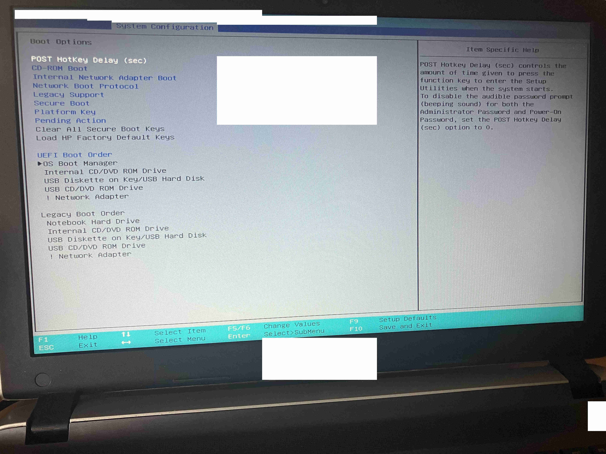
Move down to the UEFI Boot Order section.
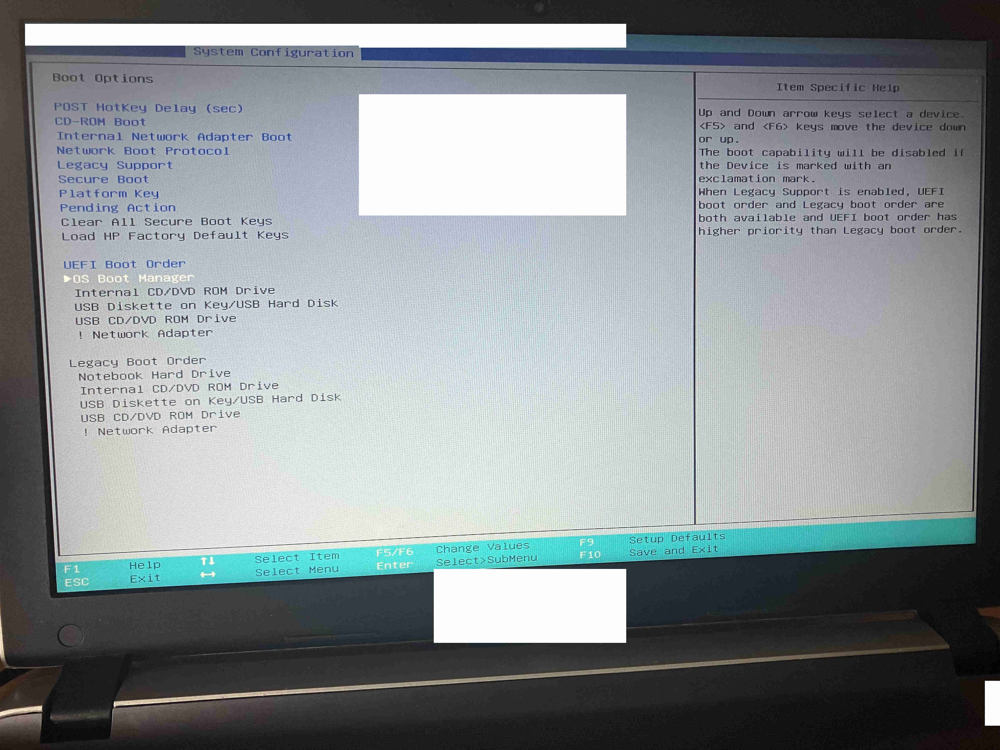
Change the boot order to whatever is desired.
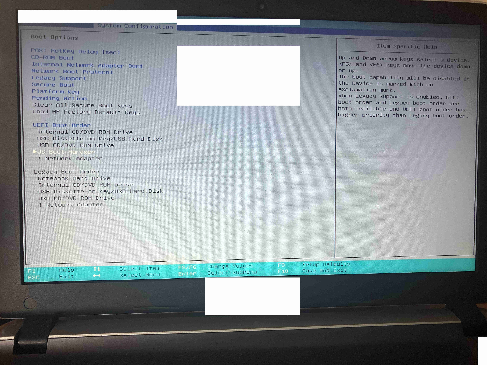
When done changing the boot order, Save and Exit. The first operating system found from the list will then load.
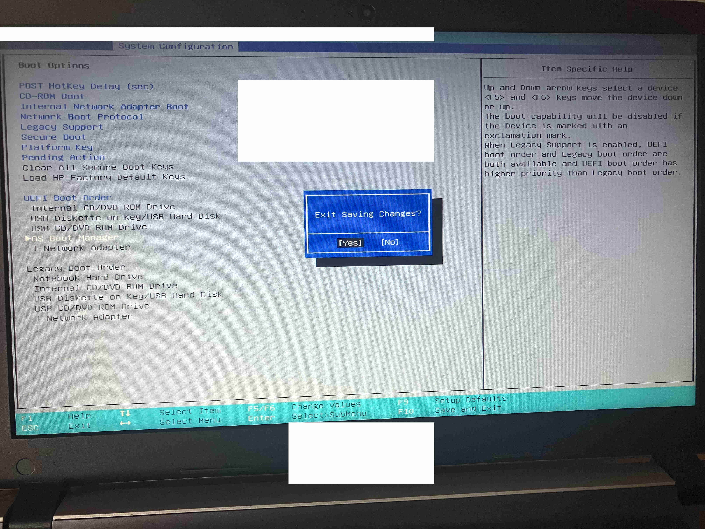